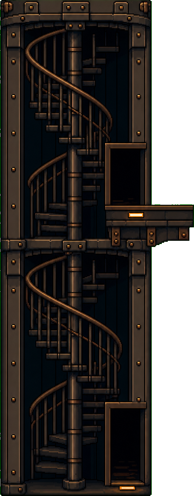
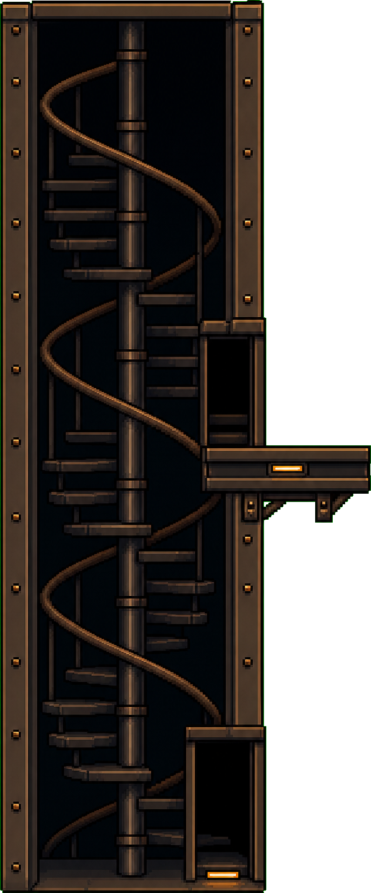
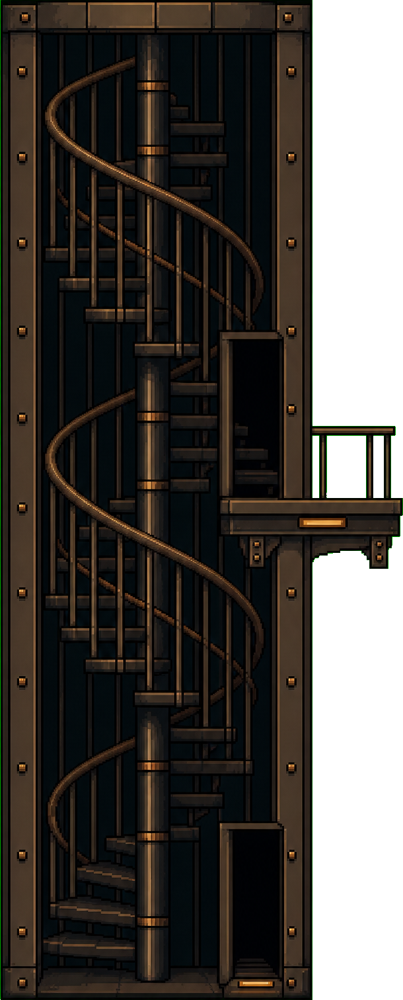

r22 SM probes — the midline is the upper story's floor line

50%
A — caged (baseline)
ar 0.391 · deck at 41.3% · LAW BROKEN (−132px)

50%
B — open drum
ar 0.417 · deck at 49.9% · LAW PASS (−2px)

50%
C — railed deck
ar 0.403 · deck at 42.6% · LAW BROKEN (−112px)